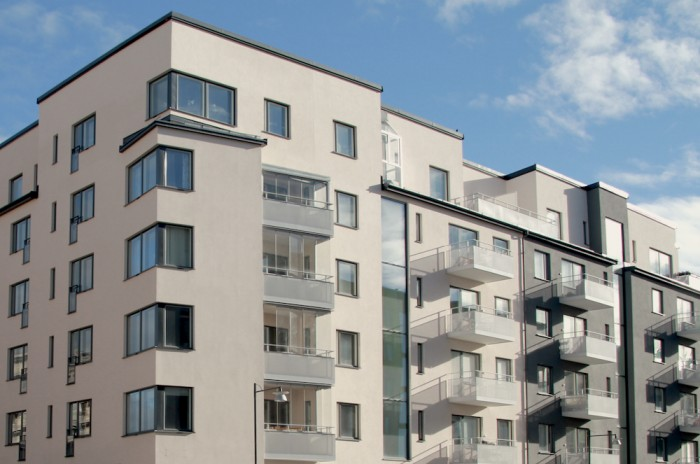

<div class="programs-item">
	<div class="container">
		<div class="row">

			<div class="col-xs-12">
				<div class="programs-item__header emerge" data-effect="relax" data-duration="500">
					<h1>Реабилитация после эндопротезирования коленного сустава</h1>
					<hr>
					<div class="row">
						<div class="col-xs-12 col-sm-9 col-md-8">
								<div class="programs-item__header__info">
									<div class="h3">Цель операции:</div>
									<ul>
										<li>восстановление движений в суставе;</li>
										<li>восстановление опороспособности конечности.</li>
									</ul>
									<p>Современные модели эндопротезов коленного сустава и высокий уровень подготовки современных хирургов позволяют вернуть пациентов к полноценной жизни. Но без специализированной реабилитации это невозможно.</p>
								</div>
						</div><!-- col6 -->

						<div class="col-xs-12">
							<div class="row">
								<div class="programs-item__header__price">
									<div class="h2 pull-left">Длительность — 10 дней</div>
									<div class="h2 pull-right">Стоимость — 16 000 ₽</div>
							</div>
							</div>
						</div>

					</div><!-- /row -->
				</div><!-- /programs-item__header -->
			</div><!-- /col12 -->

			<div class="col-xs-12 col-sm-7 emerge margin" data-effect="relax" data-duration="500">
				<div class="h2">Программа реабилитации</div>
				<p>Большинство современных моделей эндопротеза предполагают цементную фиксацию. Это позволяет начинать реабилитационные мероприятия в раннем послеоперационном периоде. В зависимости от особенностей трудовой деятельности или спортивных увлечений пациента составляется индивидуальная программа восстановительного лечения.</p>
			</div><!-- /col-title -->
			<div class="col-xs-12 col-sm-7 emerge" data-effect="relax" data-duration="500">
				<div class="h3">Первый этап</div>
				
				<p class="caption">Подпись к фото</p>
				<p>Задачами этого реабилитационного периода являются восстановление амплитуды движений в коленном суставе, поддержание мышечной силы и массы, борьба с отеком и уменьшение болевого синдрома.</p>
				<div class="h3">Второй этап</div>
				<p>Во время второго этапа реабилитации, в зависимости от особенностей выполненной операции, начинается постепенное увеличение нагрузки на оперированную ногу. Акцент делается на формирование правильной походки и тренировки мышц. В этом периоде проводятся следующие процедуры:</p>
				<ul class="list__line">
					<li>занятия на медицинских тренажерах,</li>
					<li>занятия в водолечебнице,</li>
					<li>функциональная нейромиостимуляция</li>
					<li>ортопедическую гимнастику</li>
				</ul>
				<div class="h3">Третий этап</div>
				<p>Задачами этого реабилитационного периода являются восстановление амплитуды движений в коленном суставе, поддержание мышечной силы и массы, борьба с отеком и уменьшение болевого синдрома.</p>
			</div><!-- /col-text -->

			<div class="col-xs-12 col-sm-5 col-md-4 col-md-offset-1">
				<div class="programs-item__callback emerge" data-effect="zoom" data-duration="500">
					<div class="callback">
						<div class="h3">Запись к врачу</div>
						<form class="form-horizontal">
							<div class="form-group">
								<label for="inputName1" class="col-sm-1 control-label">Имя</label>
								<div class="col-sm-12">
									<input type="text" class="form-control" id="inputName1">
								</div>
							</div>
							<div class="form-group">
								<label for="inputTel1" class="col-sm-1 control-label">Телефон</label>
								<div class="col-sm-12">
									<input type="text" class="form-control" id="inputTel1">
								</div>
							</div>
							<div class="form-group">
								<div class="col-sm-8">
									<div class="checkbox">
										<label>
											<input type="checkbox"> Перезвонить сейчас
										</label>
										<label>
											<input type="checkbox">Сегодня
										</label>
									</div>
								</div>
							</div>
							<div class="form-group">
								<div class="col-sm-12">
									<button type="submit" class="btn btn-danger">Записаться</button>
								</div>
							</div>
						</form>
					</div><!-- /callback -->
				</div><!-- /programs-callback -->
			</div><!-- /col-callback -->


			<div class="col-xs-12 col-sm-12">
				<div class="add-info">
					<p><a href="#" class="link">← Вернуться в программы</a></p>
					<p>Смотрите также <a href="#" class="link">эндопротезирование коленного сустава</a>, <a href="#" class="link">лечение коленного сустава</a>, <a href="#" class="link">болят колени</a>.</p>
				</div>
			</div><!-- /col-addinfo -->

		</div><!-- /row -->
	</div><!-- /container -->
</div><!-- /programs-item -->